01 / 20ลงเวลาวันนี้
สำหรับ พนักงาน · เมนู วันนี้
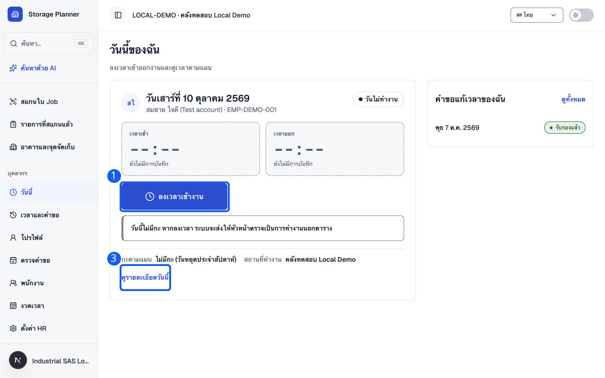
ภาพหน้าจอเต็ม ไม่ครอปหรือซูม · ดาวน์โหลดภาพต้นฉบับ- เริ่มงาน กด “ลงเวลาเข้างาน” แล้วอ่านผลบันทึก
- เมื่อเลิกงาน กดปุ่มที่เปลี่ยนเป็น “ลงเวลาออกงาน”
- กด “ดูรายละเอียดวันนี้” เมื่อต้องตรวจเวลาเข้าออก
ผลที่ควรเห็น: เวลาที่บันทึกจริงแสดงในวันนี้และประวัติ
ภาพตัวอย่างเป็นวันไม่ทำงาน การลงเวลาในวันนี้จึงต้องให้หัวหน้าหรือฝ่ายบุคคลตรวจ
02 / 20ดูเวลาและคำขอ
สำหรับ พนักงาน · เมนู เวลาและคำขอ
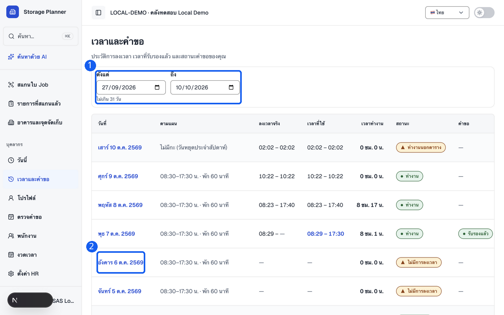
ภาพหน้าจอเต็ม ไม่ครอปหรือซูม · ดาวน์โหลดภาพต้นฉบับ- เลือกวันที่ “ตั้งแต่” และ “ถึง”
- กดวันที่ที่ต้องการดูรายละเอียด
ผลที่ควรเห็น: เปิดเวลาเดิม เวลาใช้จริง และคำขอของวันนั้น
03 / 20ขอแก้เวลา
สำหรับ พนักงาน · เวลาและคำขอ > เลือกวันที่ > เลื่อนมาที่ ขอแก้เวลา
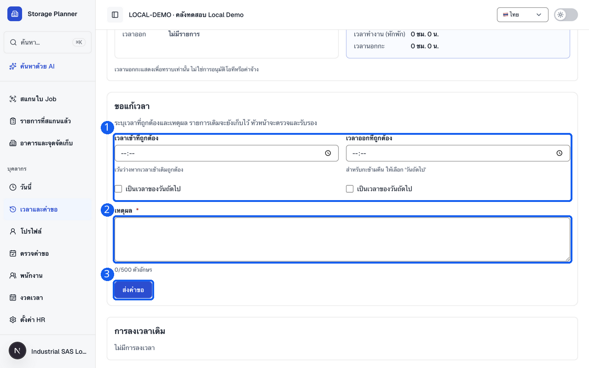
ภาพหน้าจอเต็ม ไม่ครอปหรือซูม · ดาวน์โหลดภาพต้นฉบับ- กรอกเวลาเข้าหรือเวลาออกที่ต้องแก้ กะข้ามคืนให้เลือกวันถัดไปตามจริง
- ระบุเหตุผลที่ต้องแก้เวลา
- กด “ส่งคำขอ” แล้วอ่านผลบันทึก
ผลที่ควรเห็น: แสดงว่าส่งคำขอแล้วและรอหัวหน้าตรวจ
ถ้าถูกส่งกลับ ให้เปิดวันเดิม อ่านเหตุผล แก้ข้อมูล แล้วส่งใหม่
04 / 20ตรวจโปรไฟล์และกะงาน
สำหรับ พนักงาน · เมนู โปรไฟล์
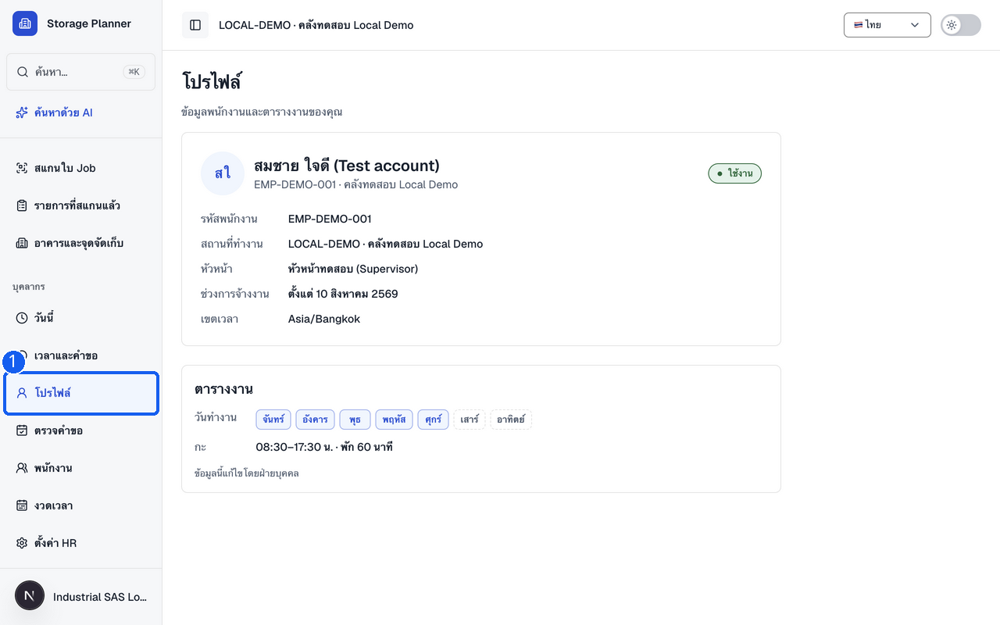
ภาพหน้าจอเต็ม ไม่ครอปหรือซูม · ดาวน์โหลดภาพต้นฉบับ- กด “โปรไฟล์”
- ตรวจชื่อ สถานที่ หัวหน้า และวันทำงานของคุณ
ผลที่ควรเห็น: เห็นกะและเวลาพักที่ฝ่ายบุคคลกำหนด
หากข้อมูลไม่ถูกต้อง ให้ฝ่ายบุคคลแก้ประวัติพนักงาน
05 / 20เลือกงานที่ต้องตรวจ
สำหรับ หัวหน้างาน / HR · เมนู ตรวจคำขอ
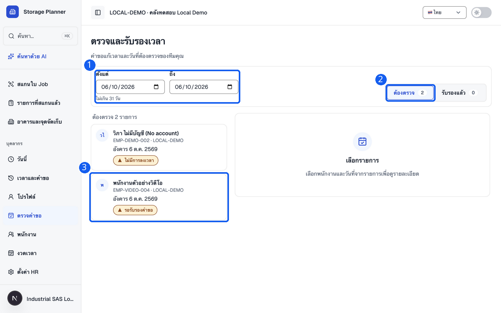
ภาพหน้าจอเต็ม ไม่ครอปหรือซูม · ดาวน์โหลดภาพต้นฉบับ- เลือกช่วงวันที่ที่ต้องตรวจ
- กด “ต้องตรวจ”
- เลือกรายการพนักงานและวันที่จากคิว
ผลที่ควรเห็น: เปิดรายละเอียดของรายการที่เลือกข้างคิว
06 / 20รับรองคำขอแก้เวลา
สำหรับ หัวหน้างาน / HR · ตรวจคำขอ > เลือกรายการที่รอรับรองคำขอ
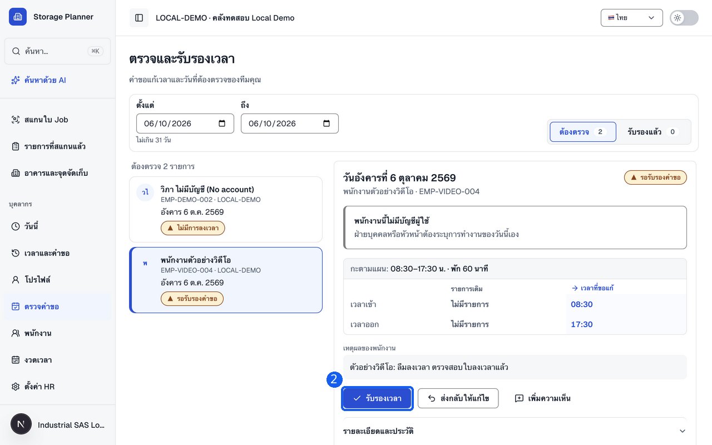
ภาพหน้าจอเต็ม ไม่ครอปหรือซูม · ดาวน์โหลดภาพต้นฉบับ- เทียบรายการเดิมกับเวลาที่ขอแก้ และอ่านเหตุผลของพนักงาน
- กด “รับรองเวลา” เมื่อข้อมูลถูกต้อง
ผลที่ควรเห็น: คำขอเปลี่ยนเป็นรับรองแล้วและคิวอัปเดต
07 / 20ส่งกลับให้พนักงานแก้ไข
สำหรับ หัวหน้างาน / HR · ตรวจคำขอ > เลือกรายการ > ส่งกลับให้แก้ไข
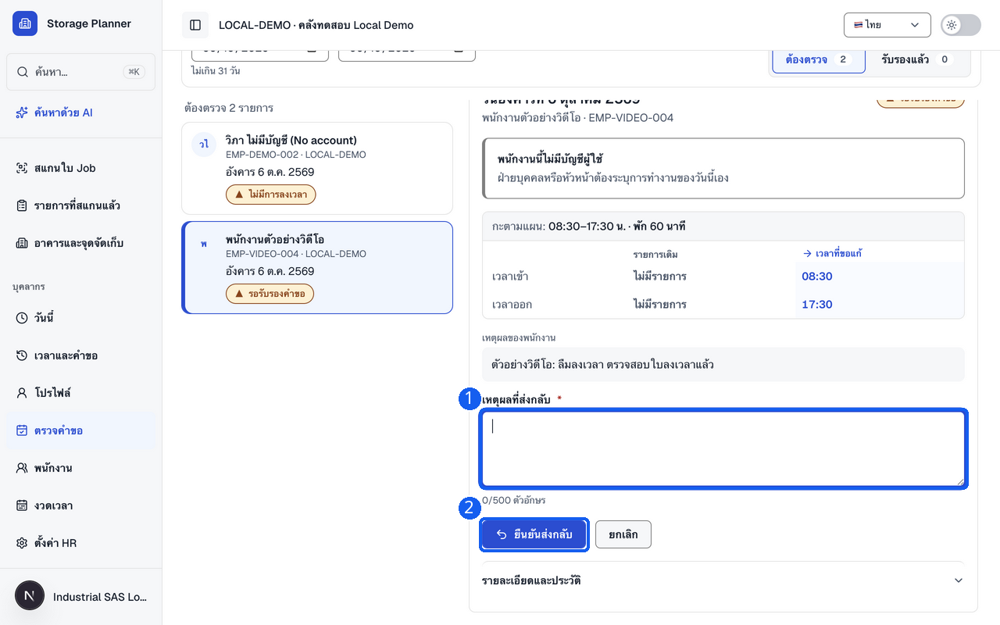
ภาพหน้าจอเต็ม ไม่ครอปหรือซูม · ดาวน์โหลดภาพต้นฉบับ- พิมพ์ “เหตุผลที่ส่งกลับ” ให้พนักงานเข้าใจว่าต้องแก้อะไร
- กด “ยืนยันส่งกลับ”
ผลที่ควรเห็น: พนักงานเห็นคำขอที่ถูกส่งกลับพร้อมเหตุผล
ภาพแสดงช่องเหตุผลหลังเลือกส่งกลับแล้ว กด “ยกเลิก” เพื่อกลับไปตัดสินคำขอ
08 / 20ตรวจวันที่เวลาไม่ครบ
สำหรับ หัวหน้างาน / HR · ตรวจคำขอ > เลือกวันที่เวลาไม่ครบ > เลื่อนมาที่ ระบุผลของวันนี้
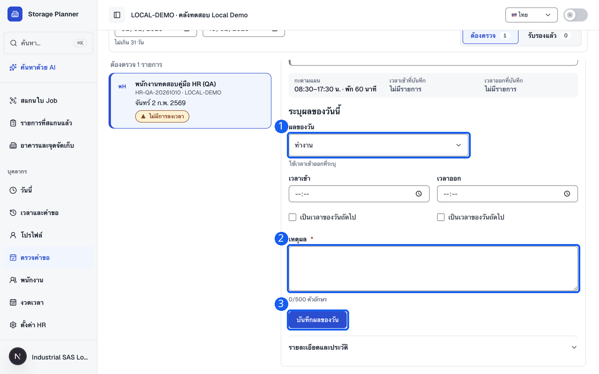
ภาพหน้าจอเต็ม ไม่ครอปหรือซูม · ดาวน์โหลดภาพต้นฉบับ- เลือก “ผลของวัน” ถ้าเลือกทำงาน ให้ระบุเวลาเข้าและเวลาออก
- ใส่เหตุผลของการรับรองวันนี้
- กด “บันทึกผลของวัน”
ผลที่ควรเห็น: รายการเปลี่ยนเป็นรับรองแล้ว
ตัวเลือกลาใช้บันทึกผลรายวันจากภายนอก ยังไม่ใช่การยื่นคำขอลาหรือยอดวันลา
09 / 20เปิดรายการและเพิ่มพนักงาน
สำหรับ HR · เมนู พนักงาน
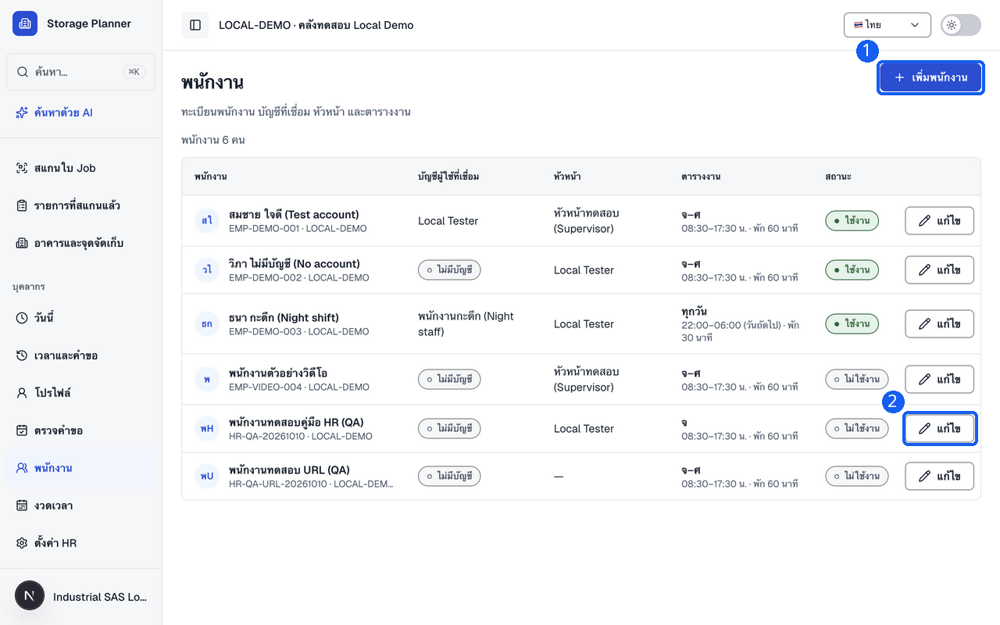
ภาพหน้าจอเต็ม ไม่ครอปหรือซูม · ดาวน์โหลดภาพต้นฉบับ- กด “เพิ่มพนักงาน” เพื่อสร้างประวัติใหม่
- เมื่อต้องแก้ข้อมูล กด “แก้ไข” ที่แถวของพนักงานคนนั้น
ผลที่ควรเห็น: เปิดแบบฟอร์มสำหรับประวัติใหม่หรือพนักงานที่เลือก
10 / 20แก้ข้อมูลพนักงาน
สำหรับ HR · พนักงาน > แก้ไข · ภาพหลังเลื่อนลงท้ายแบบฟอร์ม
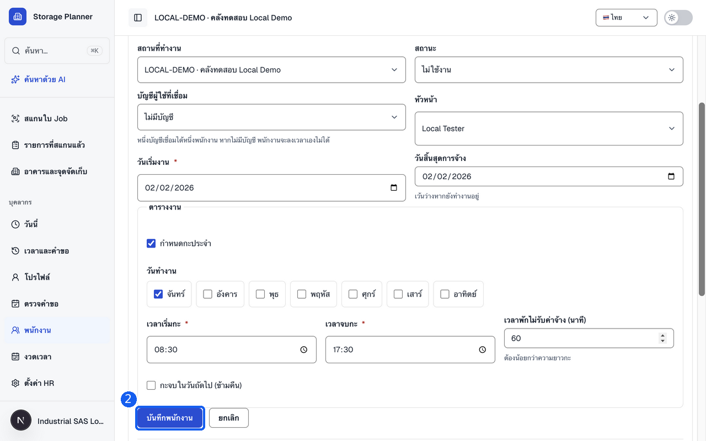
ภาพหน้าจอเต็ม ไม่ครอปหรือซูม · ดาวน์โหลดภาพต้นฉบับ- กรอกรหัส ชื่อ สถานที่ บัญชี และช่วงการจ้างงานที่ด้านบนของแบบฟอร์ม
- เลื่อนลง แล้วกด “บันทึกพนักงาน”
ผลที่ควรเห็น: กลับไปรายการพร้อมข้อมูลที่บันทึก
เลือกบัญชีผู้ใช้เมื่อพนักงานต้องลงเวลาด้วยตนเอง
11 / 20ตั้งกะและวันทำงาน
สำหรับ HR · พนักงาน > แก้ไข > เลื่อนมาที่ ตารางงาน
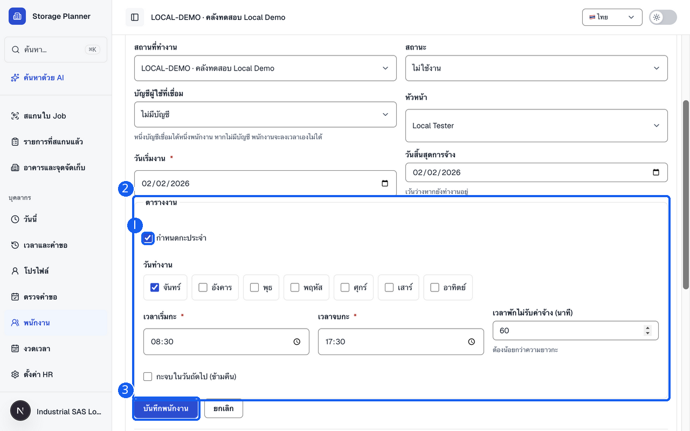
ภาพหน้าจอเต็ม ไม่ครอปหรือซูม · ดาวน์โหลดภาพต้นฉบับ- ติ๊ก “กำหนดกะประจำ”
- เลือกวันทำงาน เวลาเริ่มกะ เวลาจบกะ และเวลาพัก กะข้ามคืนให้ติ๊กวันถัดไป
- กด “บันทึกพนักงาน”
ผลที่ควรเห็น: รายการพนักงานแสดงกะที่บันทึกไว้
12 / 20สร้างงวดเวลา
สำหรับ HR · งวดเวลา > สร้างงวด
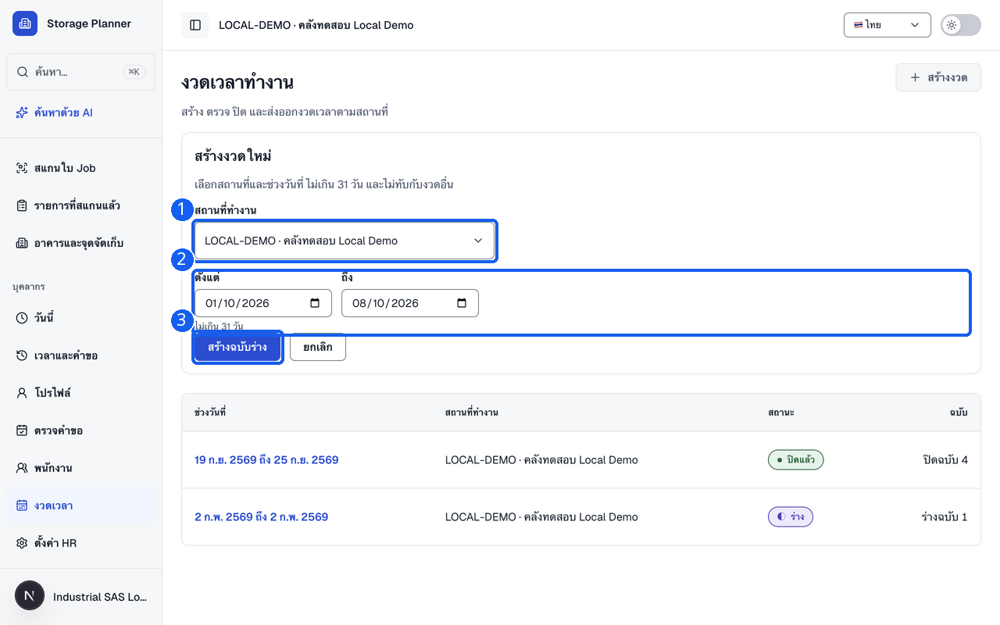
ภาพหน้าจอเต็ม ไม่ครอปหรือซูม · ดาวน์โหลดภาพต้นฉบับ- เลือก “สถานที่ทำงาน”
- เลือกช่วงวันที่ไม่เกิน 31 วัน และไม่ทับกับงวดที่มีอยู่
- กด “สร้างฉบับร่าง”
ผลที่ควรเห็น: เปิดงวดร่างของสถานที่และช่วงที่เลือก
13 / 20ตรวจและปิดงวด
สำหรับ HR · งวดเวลา > เปิดงวดร่าง > ปิดงวด · ภาพแสดงขั้นยืนยัน
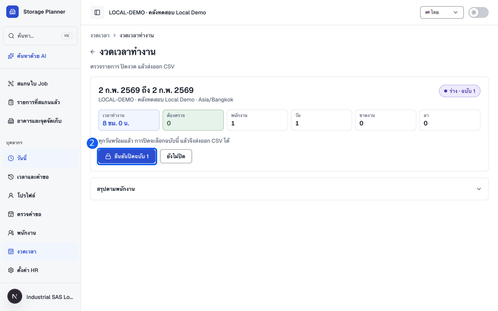
ภาพหน้าจอเต็ม ไม่ครอปหรือซูม · ดาวน์โหลดภาพต้นฉบับ- ตรวจยอดและให้ “ต้องตรวจ” เป็นศูนย์ก่อนเลือกปิดงวด
- กด “ยืนยันปิดฉบับ 1” เลขบนปุ่มเปลี่ยนตามฉบับที่เปิดอยู่
ผลที่ควรเห็น: งวดเปลี่ยนเป็นปิดแล้วและดาวน์โหลด CSV ได้
14 / 20เลือกฉบับและดาวน์โหลด
สำหรับ HR · งวดเวลา > เปิดงวดที่ปิดแล้ว > ฉบับของงวดนี้
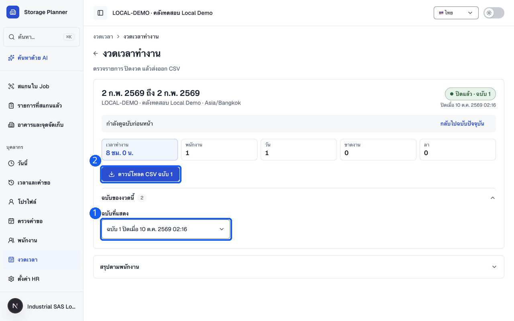
ภาพหน้าจอเต็ม ไม่ครอปหรือซูม · ดาวน์โหลดภาพต้นฉบับ- เลือกเลขฉบับในช่อง “ฉบับที่แสดง”
- กดปุ่มดาวน์โหลด CSV ให้เลขฉบับตรงกับที่เลือก (ในภาพคือฉบับ 1)
ผลที่ควรเห็น: ได้ไฟล์ CSV ของฉบับที่แสดง
15 / 20เปิดแก้งวดที่ปิดแล้ว
สำหรับ HR · งวดเวลา > เปิดฉบับล่าสุดที่ปิดแล้ว > เปิดฉบับแก้ไข
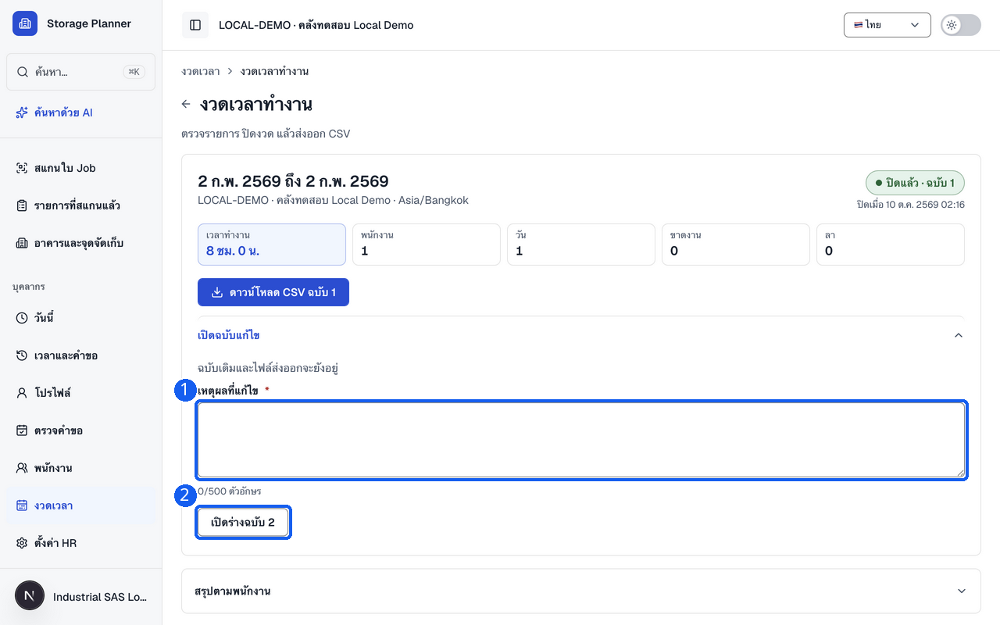
ภาพหน้าจอเต็ม ไม่ครอปหรือซูม · ดาวน์โหลดภาพต้นฉบับ- ระบุ “เหตุผลที่แก้ไข”
- กดปุ่มเปิดร่างฉบับถัดไป (ในภาพคือฉบับ 2)
ผลที่ควรเห็น: เกิดงวดร่างใหม่ ฉบับเดิมที่ปิดแล้วยังเปิดดูและส่งออกได้
16 / 20เพิ่มและลบวันหยุด
สำหรับ ผู้ดูแล HR · ตั้งค่า HR > วันหยุดของสถานที่
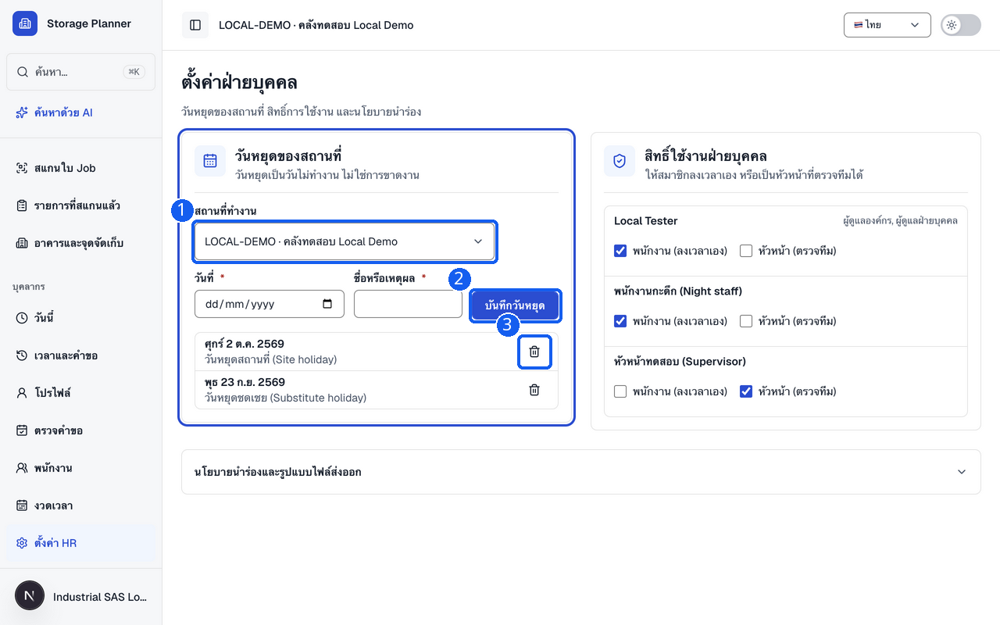
ภาพหน้าจอเต็ม ไม่ครอปหรือซูม · ดาวน์โหลดภาพต้นฉบับ- เลือกสถานที่ กรอกวันที่และชื่อหรือเหตุผลของวันหยุด
- กด “บันทึกวันหยุด”
- เมื่อต้องลบ กดปุ่มถังขยะของรายการนั้น
ผลที่ควรเห็น: รายการวันหยุดเพิ่มหรือลบตามที่เลือก
17 / 20ตรวจสิทธิ์ใช้งาน HR
สำหรับ ผู้ดูแล HR · ตั้งค่า HR > สิทธิ์ใช้งานฝ่ายบุคคล
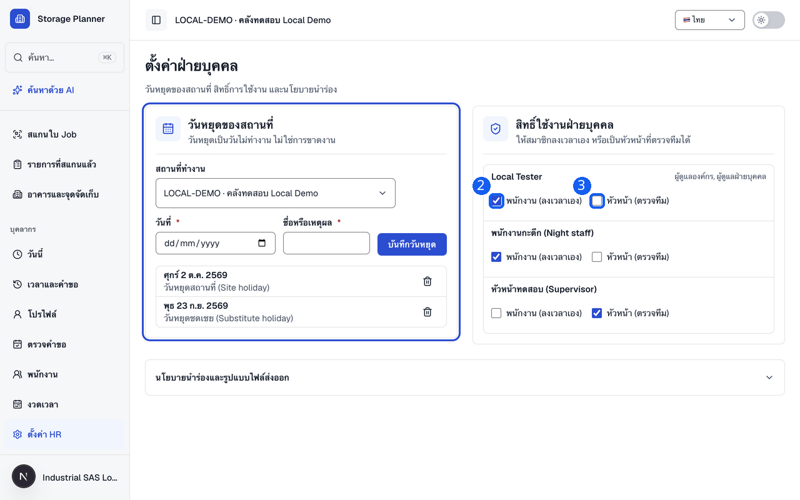
ภาพหน้าจอเต็ม ไม่ครอปหรือซูม · ดาวน์โหลดภาพต้นฉบับ- หาชื่อสมาชิกที่ต้องการตั้งสิทธิ์
- ติ๊ก “พนักงาน (ลงเวลาเอง)” เพื่อให้ลงเวลาเองได้
- ติ๊ก “หัวหน้า (ตรวจทีม)” เพื่อให้ตรวจทีมได้ เอาติ๊กออกเมื่อต้องยกเลิกสิทธิ์
ผลที่ควรเห็น: สิทธิ์บันทึกทันที เลือกเฉพาะบทบาทที่ต้องใช้
การลงเวลาเองต้องมีประวัติพนักงานที่ใช้งานและเชื่อมบัญชีนี้ด้วย
18 / 20อ่านนโยบายและรูปแบบไฟล์
สำหรับ ผู้ดูแล HR · ตั้งค่า HR > นโยบายนำร่องและรูปแบบไฟล์ส่งออก
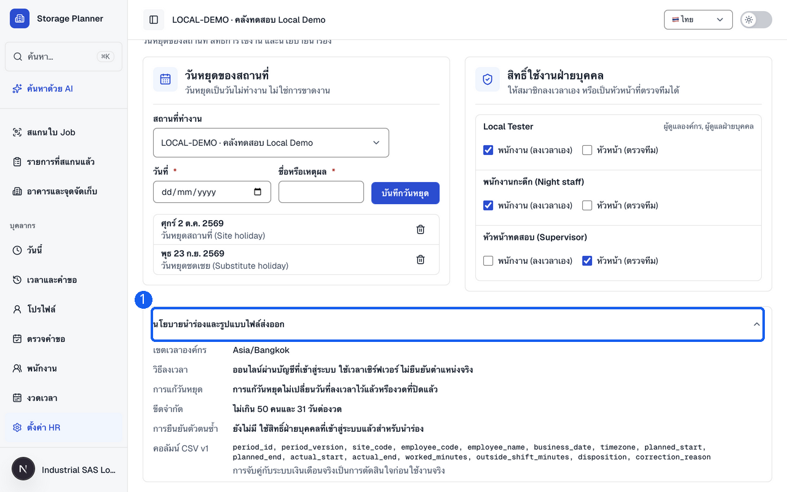
ภาพหน้าจอเต็ม ไม่ครอปหรือซูม · ดาวน์โหลดภาพต้นฉบับ- กด “นโยบายนำร่องและรูปแบบไฟล์ส่งออก” เพื่อเปิดรายละเอียด
ผลที่ควรเห็น: อ่านวิธีลงเวลา ขีดจำกัด และข้อมูล CSV ได้
ส่วนนี้เป็นข้อมูลให้อ่าน ไม่มีช่องแก้ค่า
19 / 20ค้นหน้าและหน้าย่อย
สำหรับ ทุกคน · ปุ่ม ค้นหา… หรือ Command+K / Ctrl+K
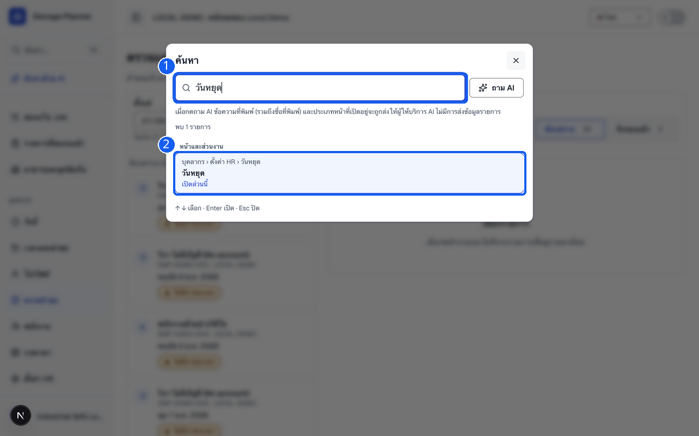
ภาพหน้าจอเต็ม ไม่ครอปหรือซูม · ดาวน์โหลดภาพต้นฉบับ- พิมพ์งานที่ต้องการ เช่น “วันหยุด”
- กดผลลัพธ์ “บุคลากร › ตั้งค่า HR › วันหยุด”
ผลที่ควรเห็น: เปิดส่วนวันหยุดของตั้งค่า HR โดยตรง
20 / 20ให้ AI พาไปจุดที่ต้องแก้
สำหรับ ทุกคน · ปุ่ม ค้นหาด้วย AI
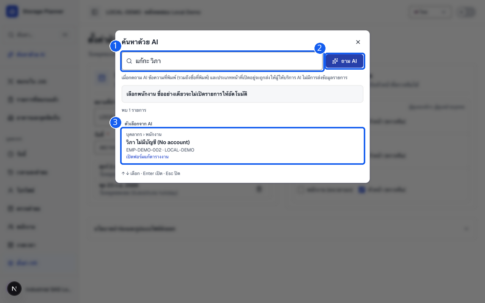
ภาพหน้าจอเต็ม ไม่ครอปหรือซูม · ดาวน์โหลดภาพต้นฉบับ- พิมพ์สิ่งที่ต้องการทำ เช่น “แก้กะ วิภา”
- กด “ถาม AI”
- เลือกคนหรือวันที่ให้ตรงกับงาน เช่น วิภาในภาพ
ผลที่ควรเห็น: เปิดแบบฟอร์มตารางงานของคนที่เลือก คุณเป็นคนกดบันทึกเมื่อแก้เสร็จ